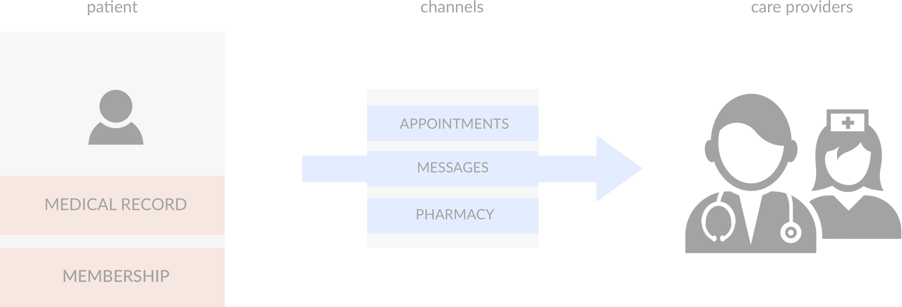

PwC Consulting
Pharmacy App for a Healthcare Giant
Background

Our client is the one of the largest healthcare provider and payer in California. My PwC team was contracted to work on their several features on their patient-facing app. We had, at that point worked on features such as code refactor, a patient skincare reporting feature and app localization into Spanish. I was assigned to project manage a team of 15 developers and testers, plus work with the client to ensure that all business requirements were met. Additionally, I was the only UX consultant on the team, so I picked up all design tasks that was assigned to the PwC team. Below is a diagram that illustrates how a patient user would interact with the care providers. The three main feature channels are: Appointment, Messages, and Pharmacy.
The client’s next project for us was to implement their pharmacy prescription order system on Android and iOS. The existing pharmacy feature was written entirely in html/css/js and ported onto the app through webviews. Its user experience was suboptimal, the UI outdated, the system performance was not great, the code was very old with a legacy backend and overall, it was not scalable for new-and-coming features that the client wants to build. A redesign was long overdue.
Pharmacy v.1
The overall app is several years old with a well-defined design styleguide created by the clients’ design team. The project seemed straightforward and my team was very excited to delve into the weeds and begin implementation. I collaborated with the client design team and iterated on designs for several weeks to ensure all the business requirements were properly captured.

It was until the middle the project that we realized business requirements were not fully captured and the backend we were dealing with was much more complex than we had anticipated. It was too late to redo the designs at this point because we had to move forward in order to stay within our committed timeline.

Pharmacy v2.0
I decided to tackle the challenge independently in my own time. Since I had full visibility into the business requirement at that point, I decided to do a second redesign.


In summary, the patient has the option to decide if they would like to pick up the prescription in a facility or get it mail-ordered to their home. Depending on their selection, the experience with Pharmacy would differ, since in-store payment is required for pick-up orders. Additionally, not all facilities support mail-order, and this would be something addressed in the backend.


My design was showcased during a presentation to my client and the client was extremely with this new design!